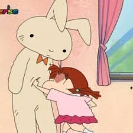

크레용 신짱의 등장인물. 떡잎마을 방범대의 홍일점으로, 통칭 네네 짱. 국내판에서의 이름은 투니버스 11기에 나온 풀네임은 한유리..
짱구와 같은 떡잎 유치원에 다니고 있다. 취미는 쓸데없이 개그 콘서트의 전 코너 시청률의 제왕, 아침 드라마, 부부 클리닉 사랑과 전쟁 같은 각본을 자랑하는 본격 막장&동심파괴스러운 리얼 소꿉놀이. 또래 아이들에 비해 어른들의 세계에 대해 더 잘 알고 있다. 짱구 등 남자 또래 아이들의 아랫도리를 벗은 모습을 눈을 가리는 척 빤히 보거나, 짱구가 채성아 선생님에게 "…그럼 오늘 신혼 첫날밤에 김한석 아저씨와… (잠시 모두 긴장) 오목 둘 거죠?"라는 말을 듣고 '그게 아니잖아, 멍청아!'라고 생각하며 화를 참는 등.